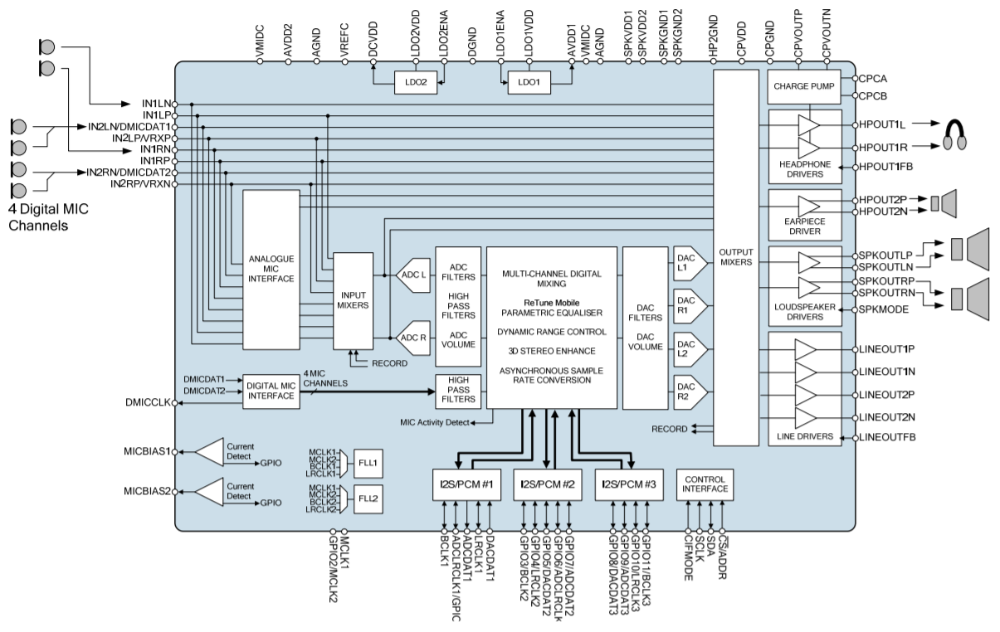
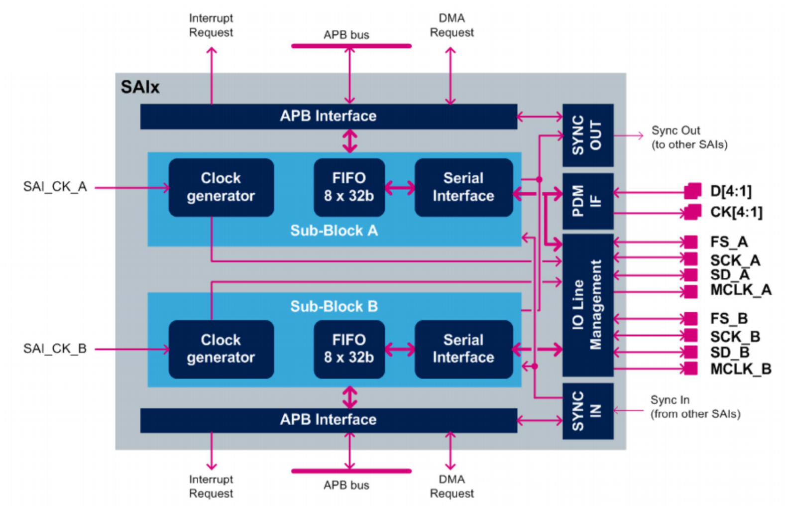

Audio
Dans cette partie, nous verrons l'ajout de la bibliothèque pour l'utilisation du codec audio WM8994 ainsi que son utilisation. La communication avec le codec se fera à l'aide de l'interface SAI.
Documentation
Codec WM8994
Un Codec est un dispositif matériel permettant de mettre en oeuvre l'encode ou le décodage d'un flux de données numérique, en vue d'une transmission ou d'un stockage.

Celui-ci présente
SAI

DMA
Ajout de la bibliothèque
On active l'interface SAI dans Multimedia avec une liaison Maitre et une laison Esclave synchrone.

Les requêtes se font alors avec le DMA avec la configuration suivante

Une fois tout ceci fait, on peut rajouter les headers et fichiers sources dans notre projet.
Fonctions principales
Initialisations
Initialiser l'enregistrement
uint8_t BSP_AUDIO_IN_InitEx (
uint16_t InputDevice /* INPUT_DEVICE_DIGITAL_MICROPHONE_2 or INPUT_DEVICE_INPUT_LINE_1 */
uint32_t AudioFreq, /* Audio frequency to be configured for the SAI peripheral */
uint32_t BitRes, /* Audio frequency to be configured */
uint32_t ChnlNbr /* Channel number */
)
Initialiser le périphérique de sortie
uint8_t BSP_AUDIO_OUT_Init (
uint16_t OutputDevice, /* OUTPUT_DEVICE_SPEAKER, OUTPUT_DEVICE_HEADPHONE,
or OUTPUT_DEVICE_BOTH */
uint8_t Volume, /* Initial volume level (from 0 (Mute) to 100 (Max)) */
uint32_t AudioFreq /* Audio frequency used to play the audio stream */
)
Gestion du stream audio
Jouer un stream audio depuis un buffer de données
uint8_t BSP_AUDIO_OUT_Play (
uint16_t *pBuffer, /* Pointer to the buffer */
uint32_t Size) /* Number of audio data in BYTES unit */
*** Dans la mémoire, les octets sont alternés entre canal gauche puis canal droit
Pause
uint8_t BSP_AUDIO_OUT_Pause(void)
Resume
uint8_t BSP_AUDIO_OUT_Resume(void)
Arrêt
uint8_t BSP_AUDIO_OUT_Stop(
uint32_t Option
/* - CODEC_PDWN_SW: for software power off (by writing registers).
Then no need to reconfigure the Codec after power on.
- CODEC_PDWN_HW: completely shut down the codec (physically).
Then need to reconfigure the Codec after power on. */
)
Régler le volume de sortie
uint8_t BSP_AUDIO_OUT_SetVolume(
uint8_t Volume /* Volume level to be set in percentage from 0% to 100% (0 for
Mute and 100 for Max volume level) */
)
Callbacks de transfert SAI
void HAL_SAI_TxCpltCallback(
SAI_HandleTypeDef *hsai /* SAI handle */
)
void HAL_SAI_TxHalfCpltCallback(
SAI_HandleTypeDef *hsai /* SAI handle */
)
Callbacks d'enregistrement
void BSP_AUDIO_IN_HalfTransfer_CallBack(void)
void BSP_AUDIO_IN_TransferComplete_CallBack(void)
Code erreur
AUDIO_OK ((uint8_t)0)
AUDIO_ERROR ((uint8_t)1)
AUDIO_TIMEOUT ((uint8_t)2)